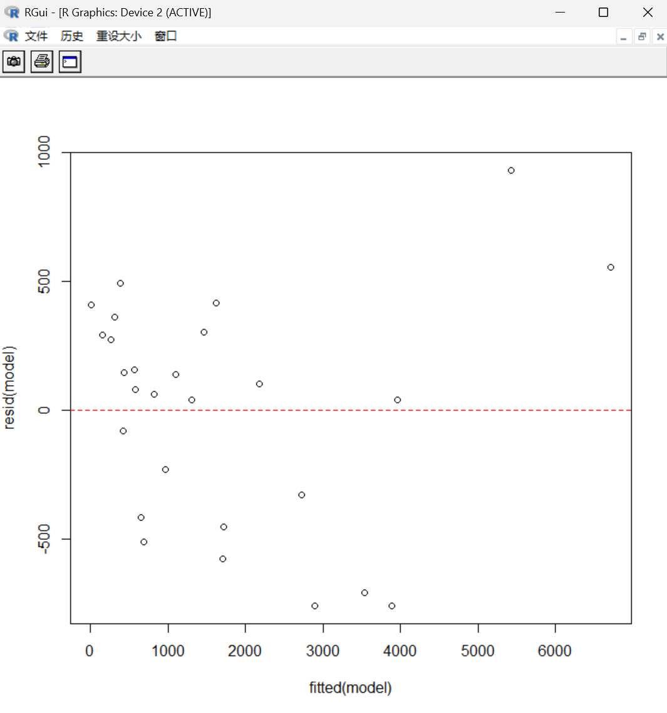
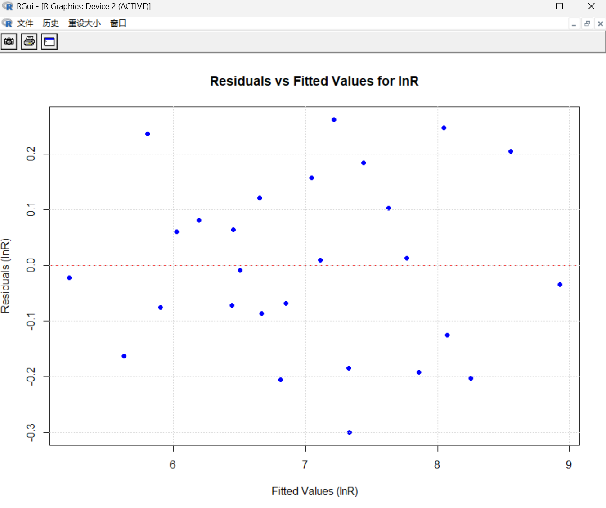
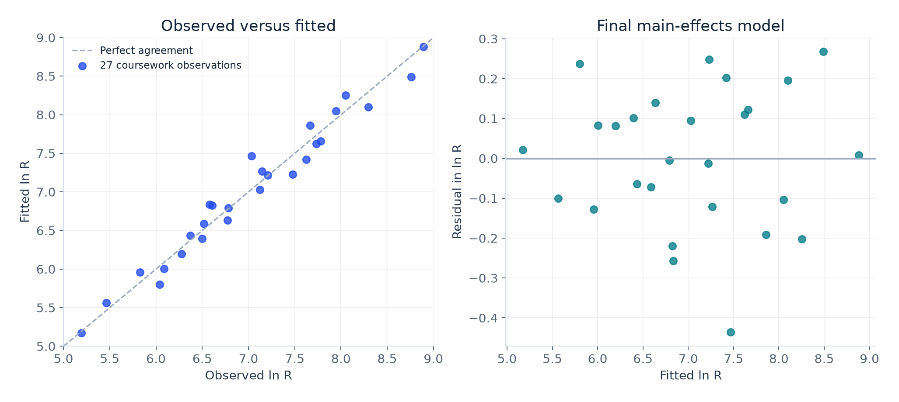

REGRESSION · MA2261 · 2025
Modelling
fatigue life.
Connecting welding settings to predicted performance.
I analysed a 27-run welding dataset in R, comparing polynomial response surfaces with a log-transformed model. The work links model selection, residual diagnostics, confidence intervals and constrained optimisation.
01 / THE DATA
Three factors. A structured experimental dataset.
Question 3 of the coursework studies fatigue life R, measured in cycles. The supplied data contain the 27 combinations of three coded factor levels.
| Factor | Symbol | Low (−1) | Centre (0) | High (+1) |
|---|---|---|---|---|
| Welding current | XA | 250 A | 275 A | 300 A |
| Voltage | XV | 25 V | 27.5 V | 30 V |
| Electrode diameter | XD | 2.5 mm | 5 mm | 7.5 mm |
This was an analysis of the coursework dataset. The project did not conduct a new welding experiment.
02 / MODEL DEVELOPMENT
Start with flexibility. Simplify with evidence.
- 01
Fit a full quadratic
Model R using the three main effects, three squared terms and three pairwise interactions.
- 02
Inspect the fitted terms
Examine the coefficient estimates and significance tests. The initial fit provides a flexible response-surface baseline.
- 03
Check the residuals
Plot residuals against fitted values and look for changing spread, unusual observations and remaining structure.
- 04
Transform the response
Fit a quadratic model for ln R, then simplify to a main-effects model after examining the transformed fit.
- 05
Interpret an effect
Translate the current coefficient and its confidence interval into a percentage change on the original scale.
- 06
Search the study range
Use the selected model to identify the settings with the largest fitted value within coded limits of −1 to +1.
03 / MODEL DIAGNOSTICS
The scale of the response matters.
The original report compares residual patterns before and after taking logs. The following figures concern the full quadratic fits; the selected model is subsequently simplified.


04 / THE SELECTED MODEL
A simpler model with interpretable effects.
The final fit retains the three main effects on the log response scale.
ln R = β0 + βAXA + βVXV + βDXD + εThe coefficients describe changes in the expected log response. Exponentiating the fitted value gives a geometric-mean-scale prediction; it is not automatically an unbiased estimate of mean fatigue life.
Translate a coefficient into an effect
The current coefficient is approximately 0.83238. A 0.1 increase in coded current corresponds to 2.5 A. The fitted multiplicative change is exp(0.1 × 0.83238), giving an 8.68% increase while voltage and diameter are held fixed.
The confidence interval is obtained by transforming the coefficient’s interval through the same exponential expression. It describes uncertainty in the fitted effect, rather than the variability of a future individual weld.
Optimise within the experimental region
The selected model increases with current and decreases with voltage and electrode diameter over the studied range. Its largest fitted value occurs at XA = +1, XV = −1 and XD = −1.
300 A current25 V voltage2.5 mm diameter
The reported value is approximately 7,213 cycles. This is a model-based choice inside the specified region, not a global optimum or a guaranteed service life.
RECOMPUTED FROM SOURCE / 27 OBSERVATIONS
The final fit, observation by observation.
A reproducible check of the selected model, using the same coursework data and a clearly stated response scale.

Data: original report page 7. Factor columns follow its printed data vectors; voltage and diameter coefficient labels appear swapped in a later output, which does not change the fitted values or error measures shown here. Download the 27 observations and fitted values (CSV) ↓
05 / REFLECTION
A useful prediction needs its assumptions.
What the project demonstrates
I used R to fit and simplify regression models, inspect diagnostics, interpret a transformed response, quantify an effect with a confidence interval and connect coded factors back to physical settings.
What a stronger validation would add
Independent confirmation runs at the selected settings would test the prediction. Out-of-sample evaluation, checks of influential observations and appropriate prediction intervals would make the result more useful for a practical decision.
Source record and scope
MA2261 Coursework 2, supplied as Linear_coursework2.pdf, Question 3, pages 7–12. Data and initial model: Figure 3.1; diagnostics: Figures 3.2 and 3.4; transformed fit: Figure 3.3; final model and confidence interval: Figure 3.5; selected settings: Figure 3.6.
The headline fit, current effect and maximum prediction were cross-checked using the 27 response values printed in the report. These checks reproduce the supplied dataset analysis; they do not add independent experimental validation.
STATISTICAL MODELLING / RUIZHE XU